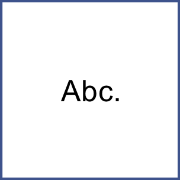
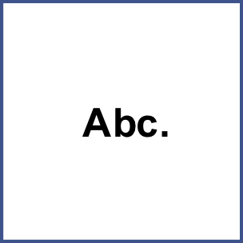
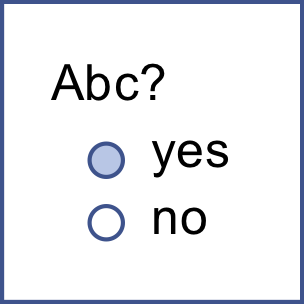
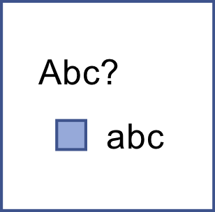
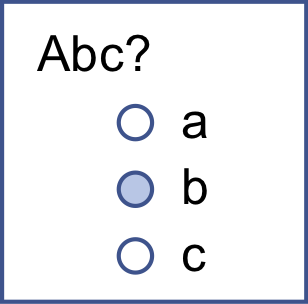
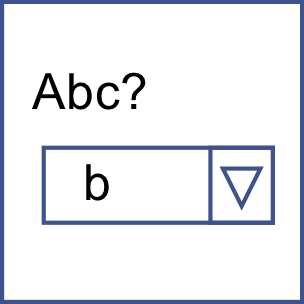
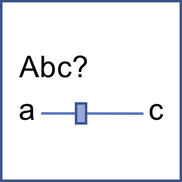
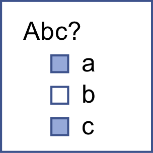
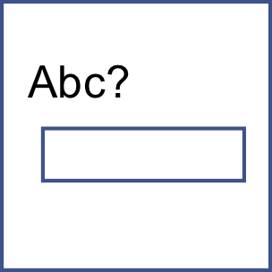
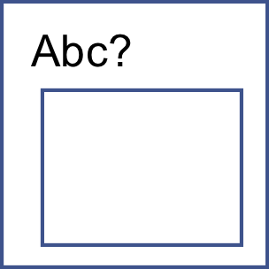

Here is where you can write questions to ask people about their stories. You'll draw from these questions when you create your story forms.
Here is where you can write questions to ask people about their stories. You'll draw from these questions when you create your story forms.
Add some questions to your list. For each question, write what you want to ask people. Choose what type of answers you will collect (see below for an explanation of the types). Also give each question a short name. Make sure the short name is actually short, so there's room to write it in tables and on graphs.
You can copy questions from built-in templates (suggestions). Change the blank spaces (_____) in the question to suit your project and participants.
For help choosing, click the "Recommendations for story questions" button. You'll see a table that shows the various options, color-coded with evaluations of risk, connected to the answers you gave to questions about your participant groups and resources.
Asking questions helps people make sense of their own stories. These interpretations increase your project's breadth and depth of exploration, leading to deeper insights. When you ask not just "what happened" but "what does that mean to you," you've gone further and deeper in.
You don't set the question order here. You only create the questions here. You set the order of questions when you design your story form. That's so you can reuse your questions in multiple story forms.
| Questions with no answers | |
|  | A label is just some plain text. It's not really a question. Nothing gets stored. It's a way to talk to people between your questions. |
|  | A header is the same thing as a label, only it's formatted as bold text. |
| Questions with a single yes/no answer | |
|  | A boolean question shows the options "yes" and "no," of which people can choose only one. If the participant never checks either radio buttion, no answer is recorded. If they check either button, an answer is recorded. There is no way to "uncheck" a radio buttion question after it has been touched. |
|  | A checkbox question has one solitary check box. It starts out unchecked. Enter a label for the checkbox. If the participant never checks the box, no answer is recorded. If they check and then uncheck the box, their answer is recorded as "unchecked." |
| Questions with a single answer chosen from a list | |
|  | A radiobuttons question has any number of answers, from which people can choose only one. These are like buttons on a radio: when you click one choice, all the others "pop up." Enter the answers you want to make available in the answers box. As with the boolean answer type, there is no way to "uncheck" a radio button selection once you have touched it. (This is standard HTML radio-button behavior.) |
|  | A select question has a single-choice drop-down list. Enter your list items in the answers box. You can also choose to show the list in full (without a drop-down) using the "rows" parameter. |
|  | A slider question has a line with a button that you drag. Labels on the left and right show people what they are choosing between. When the Does not apply checkbox under the slider is checked, it means that the question has not been answered. All sliders start out with this checkbox checked. When a participant moves the slider (using the mouse or an arrow key), the box gets unchecked. They can check the box again to decline to answer the question. If you want a different label to appear on the "Does not apply" checkbox (e.g., "Not sure" or "I don't see how this is relevant"), enter your label here, under the (fake) slider. |
| Questions with multiple answers chosen from a list | |
|  | A checkboxes question has any number of check box answers. Enter labels for your check boxes in the answers box. To limit the number of boxes participants can check, select a maximum number of checkboxes in the drop-down box just after the list of choices. |
| Questions with free text answers | |
|  | A text question has a one-line text box, for short but free-text answers. |
|  | A textarea question has a multi-line, resizeable text box, for paragraph-length free-text answers. |
A free-text write-in answer option can be:
You can create a write-in answer option for every type of question (except "header" and "label," which are not really questions at all). To create a write-in answer option, enter a label you want to appear before the text box. Some examples might be "other" (after a list of choices) or "Care to elaborate?" (after any type of question). If you leave the write-in field blank, no write-in option will be shown.
If you want to give people more room to write, start your label with two asterisks (**). NarraFirma will trim off the asterisks and display a multi-line, expandable text box.
You can access your write-in answers in three places:You can use these HTML tags: address, article, b, big, blockquote, br, caption, cite, code, del, div, dd, d1, dt, em, h1, h2, h3, h4, h5, h6, hr, i, kbd, li, ol, p, pre, s, small, span, sup, sub, strong, strike, table, td, th, tr, u, ul.
You can also use a smaller subset of HTML tags (b, big, em, i, s, small, sup, sub, strong, strike, u) in your specified answers (choices) for checkboxes and radio buttons.
HTML tags affect how your question texts appear in your online survey and in the "Enter or import stories" screen. They are stripped out when you print your story form.
To protect your NarraFirma installation from hacking, you cannot use attributes (such as "id") on any of these tags.
Only if you are comfortable editing the source code files in your installation of NarraFirma. If you are, find the file called "templates.js" and add your template to it. (Backup the file first!) Follow the formatting in the templates you see, and make sure you put your template in the right part of the file. If NarraFirma won't start up after you make your changes, check your browser's console to find out where the error lies.